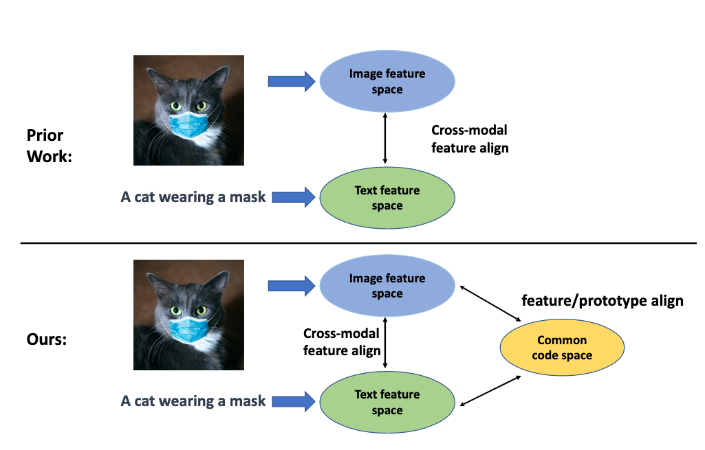
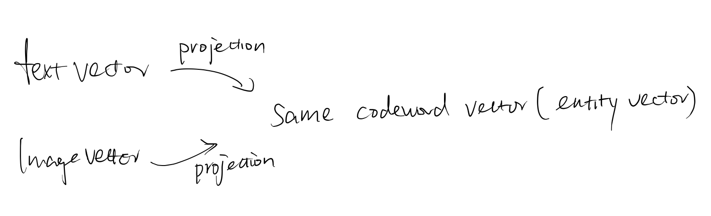
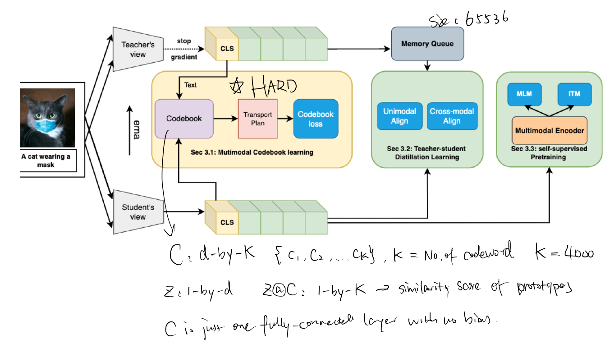
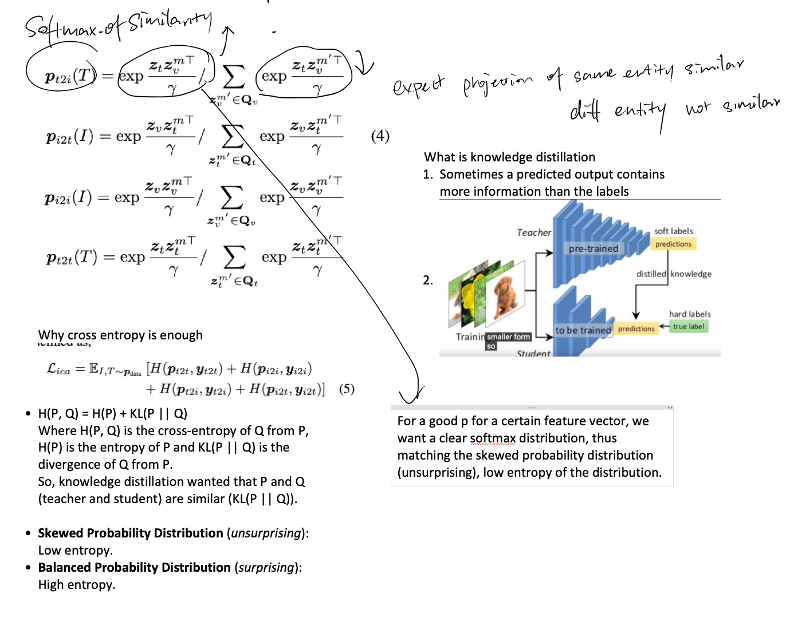
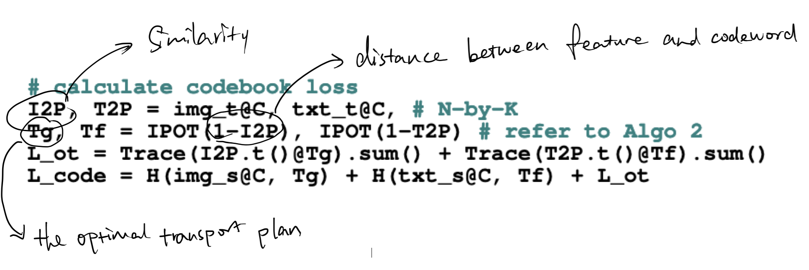

[TOC]
- Title: Multi-modal Alignment Using Representation Codebook
- Author: Jiali Duan, Liqun Chen et. al.
- Publish Year: 2022 CVPR
- Review Date: Tue, Aug 9, 2022
Summary of paper
Motivation
- aligning signals from different modalities is an important step as it affects the performance of later stage such as cross-modality fusion.
- since image and text often reside in different regions of the feature space, directly aligning them at instance level is challenging especially when features are still evolving during training.
Contribution
- in this paper, we treat image and text as two “views” of the same entity, and encode them into a joint vision-language coding space spanned by a dictionary of cluster centres (codebook).
- to further smooth out the learning process, we adopt a teacher-student distillation paradigm, where the momentum teacher of one view guides the student learning of the other.
Some key terms
Types of Vision language pre-training tasks
- multimodal alignment: aligning the feature spaces of different modalities
- late fusion approaches such as CLIP and ALIGN focus on this
- cross-modal fusion: capturing the interaction across modalities.
- early fusion approaches such as OSCAR, VinVL and VilLT focus on this
**momentum distillation, **
- for each of the image, text and fusion encoder, there is a corresponding encoder that is updated through moving average without gradient back propagation. These momentum encoder serve as teachers to guide the self-supervised learning process. In this paper, we use the teachers to guide codebook learning as well as for the cross-modal and intra-modal alignment
codebook
codebook is a d-by-K matrix used as projector to project image and text feature into a common space.
Method

- in this work, features from image and text modalities were first aligned and then fused using a transformer encoder.
- the main focus of the work is on the feature alignment stage -> make it more efficient
- the main contribution of this method is: using a codebook that quantizes the common text-image feature into codewords (cluster centre).
- this cluster centre provide a more stable means for contrastive reasoning compared to individual text or visual features.

Inspiration from SwAV
Two augmented versions (views) of the same input image were passed through a deep network for feature extraction. visual embedding was learned by optimising an objective function that enforces the consistency between the feature from one and the assigned cluster from the other view (different view leads to the same entity and that entity is represented as cluster (or codeword in this paper))
- Effectively, visual and text features are lined up via aligning with the common codewords during training.
Overview of the framework


Optimal Transport
http://alexhwilliams.info/itsneuronalblog/2020/10/09/optimal-transport/
this allows the feature vector to be similar to one of the codeword cluster centre

Optimal Transport is a little bit complex, we may want to use alternative way to implement this.
Essentially the idea is that we want to have an intermediate cluster centre vector so that both image feature and text feature can take projection on this.
Potential future work
Use the alignment loss in this paper to train our model
Although this model does not consider the temporal order / sequence alignment